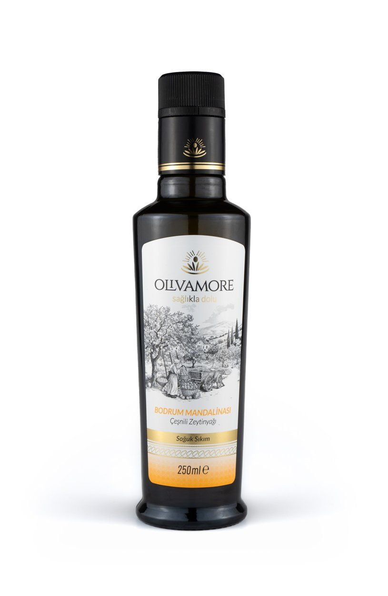

Tarif · Bodrum Mandalina Bitirme Yağı
Mandalinalı Pancar, Beyaz Peynir ve Ceviz
Pancarın toprak tatlılığı, tuzlu peynir ve cevizle birleşir; mandalina yağı yalnızca kokuyu yükseltir.
15 dk · 2-3 kişilik

Pancarın toprak tatlılığı, tuzlu peynir ve cevizle birleşir; mandalina yağı yalnızca kokuyu yükseltir.
15 dk · 2-3 kişilik
Narenciye notu: Mandalina yağı aroma verir; limon suyunun asitliğini veya meyvenin tatlılığını vermez. Asit bu tarifte ayrı eklenir.
Soğuk tabakta, düşük dozdan başlayarak kullan; pancarın tatlılığını narenciye kokusuyla aç.
